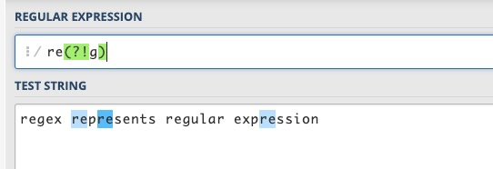
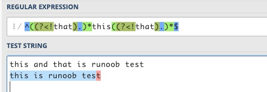
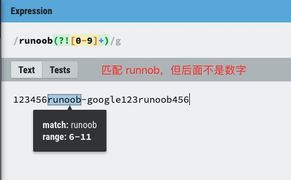
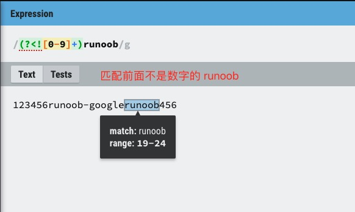

正規表現におけるゼロ幅断言は特殊な構造で、マッチング時に文字を消費せず、マッチ位置に対して条件判断を行うだけです。これは複雑なパターンマッチングに非常に有用です。マッチ位置の前後に条件を追加できるため、マッチングをより精密に制御できます。
正規表現の先読み断言と後読み断言には、全部で4つの形式があります：
- (?=pattern)零宽正向先行断言(zero-width positive lookahead assertion)
- (?!pattern)零宽负向先行断言(zero-width negative lookahead assertion)
- (?<=pattern)零宽正向后行断言(zero-width positive lookbehind assertion)
- (?<!pattern)零宽负向后行断言(zero-width negative lookbehind assertion)
この中のpatternは正規表現です。
如同^代表开头，$代表结尾，\b単語境界と同じように、先読み断言と後読み断言も似た働きをし、特定の位置にのみマッチします。マッチングの過程で文字を消費しないため、ゼロ幅断言と呼ばれます。"零宽"ここでいう位置とは、文字列中の（各行の）最初の文字の左側、最後の文字の右側、および隣接する文字の間（文字の方向が左から右であると仮定）を指します。
概念说明：
- ゼロ幅（Zero-width）：位置のみにマッチします。ゼロ幅とは、アサーションがマッチする際に文字列を「消費」しないことを意味し、単に位置に対して条件判断を行うだけです。マッチ位置の前後の文字はマッチ結果に含まれません。
- 先読み（Lookahead）： 断言がマッチ位置より前で行われることを示します。
- 後読み（Lookbehind）： 断言がマッチ位置より後で行われることを示します。
- 肯定（Positive）： 括弧内の式にマッチすること、つまり断言が行う条件判断が肯定的であることを示し、条件が成立した場合にのみマッチが成功します。
- 否定（Negative）： 括弧内の式にマッチしないこと、つまり断言が行う条件判断が否定的であることを示し、条件が成立しない場合にのみマッチが成功します。
以下、それぞれ例を挙げて、この4つの断言の意味を説明します。
(?=pattern) 正の先読みアサーション
文字列中のある位置を表し、その位置の直後にある文字列が pattern にマッチできることを示します。
例えば"a regular expression"この文字列で、regular の中の re にはマッチさせたいが、expression の中の re にはマッチさせたくない場合は、次を使います：re(?=gular)この式は re の右側の位置を限定し、この位置の後が gular であることを要求しますが、gular の文字を消費しません。


(?!pattern) 負の先読みアサーション
文字列中のある位置を表し、その位置の直後にある文字列が pattern にマッチできないことを示します。
例えば"regex represents regular expression"この文字列で、regex と regular 以外の re にマッチさせたい場合は、次を使います：re(?!g)、この式は限定しています。re右側の位置で、この位置の後は文字 g ではありません。g。
否定と肯定の違いは、その位置の後の文字が括弧内の式にマッチできるかどうかにあります。

(?<=pattern) 正の後読みアサーション
文字列中のある位置を表し、その位置の直前にある文字列が pattern にマッチできることを示します。
例えばregex represents regular expressionこの文字列には4つの単語があります。単語内部の re にはマッチさせたいが、単語の先頭にある re にはマッチさせたくない場合は、次を使います：(?<=\w)re単語内部の re では、re の前は単語文字であるはずです。
後読み断言と呼ばれるのは、正規表現エンジンが文字列と式をマッチングする際、文字列の先頭から末尾に向かって文字をスキャンし、式と一致するかを判断するからです。式中でこの断言に遭遇した場合、正規表現エンジンは文字列の前方、つまりスキャン済みの文字を確認する必要があり、スキャン方向に対して後ろ向きになるためです。

(?<!pattern) 負の後読みアサーション
文字列中のある位置を表し、その位置の直前にある文字列が pattern にマッチできないことを示します。
例えば"regex represents regular expression"この文字列で、単語の先頭にある re にマッチさせたい場合は、次を使います：(?<!\w)re。単語の先頭のreこの例では、つまり単語内部にないre，即reその前が単語文字ではない。もちろん使うこともできます。\bre来匹配。

これら4つの断言を理解するには、2つの観点から考えることができます：
-
1、先読み(lookahead)と後読み(lookbehind)について：正規表現エンジンは文字列と式のマッチングを実行する際、先頭から末尾（前から後ろ）へと連続的に文字列内の文字をスキャンします。スキャンポインタが文字の境界を指し、マッチングの進行に伴って移動すると想像してください。先読みアサーションは、スキャンポインタがどこかにあるとき、エンジンがポインタがまだスキャンしていない文字へのマッチを試みるものです。ポインタがその文字に到達するより先に行うため、先読みと呼ばれます。後読みアサーションは、エンジンがポインタがすでにスキャンした文字へのマッチを試みるものです。ポインタがその文字に到達した後に行うため、後読みと呼ばれます。
-
2、正(positive)と負(negative)について：肯定は括弧内の式にマッチすることを表し、否定はマッチしないことを表します。
これら4つのアサーション形式の覚え方：
-
1、先読みと後読み：后行断言(?<=pattern)、(?<!pattern)後読み断言には、小なり記号があり、それは同時に矢印でもあります。左から右へのテキスト方向では、この矢印は後ろを指しており、これも我々の感覚に合っています。小なり記号を取り除けば、先読み断言になります。
-
2、正と負：不等于(!=)、逻辑非(!)すべて使う!記号で表すので、次のものがあります!記号の形式はマッチしないこと（負）を表します；また!号换成=その記号であれば、マッチすること（正）を表します。
私たちはよく正規表現を使って文字列が特定の部分文字列を含むかを検証します。文字列が特定の文字または複数の文字を含まないことを表すのも簡単で、次を使います：[^...]形式で十分です。では、文字列が特定の部分文字列（文字列から構成される）を含まないことを表すにはどうすればよいでしょうか？
用 [^...]この形式では不十分で、この場合は（否定）先読み断言または後読み断言、あるいはその両方を使う必要があります。
例えば、ある文が〜を含むかどうかを判断するにはthis，但不包含that。
包含this比較的簡単です。ある文が〜を含まないことはthatこの文の各文字の前はすべて...ではないと考えることができます。thatまたは各文字の後ろがいずれも〜ではないことthat。正規表現は次のとおりです：
^((?<!that).)*this((?<!that).)*$ 或 ^(.(?!that))*this(.(?!that))*$
に対してthis is サンプル testこの文では、2つの式はどちらもマッチに成功しますが、this and that is サンプル testすべてマッチに失敗します。


一般的な場合、これらの2つの式でほぼ要件を満たせます。極端な場合を考えると、例えば文が...で終わる場合、that开头、以that结尾、thatとthisが連続している場合、上記の式では対応できない可能性があります。例えばサンプル thatthis is the case或者this is the case, not that等。
これらの断言を柔軟に活用すれば、簡単に解決できます：
^(.(?<!that))*this(.(?<!that))*$ ^(.(?<!that))*this((?!that).)*$ ^((?!that).)*this(.(?<!that))*$ ^((?!that).)*this((?!that).)*$
これら4つの正規表現で上記のいくつかの文をテストしたところ、結果はすべて要件を満たします。
上記の4つの断言では、括弧内の pattern 自体が正規表現です。ただし、2つの後読み断言には制限があり、Perl と Python では、この式は固定長（fixed length）でなければなりません。つまり、次が使用できません：*、+、?などのメタ文字、例えば(?<=abc)問題ありませんが、(?<=a*bc)はサポートされていません。特に式に | で接続された分岐が含まれる場合、各分岐の長さは同じである必要があります。変長の式がサポートされないのは、エンジンが後読み断言を調べる際に、何歩遡ればよいかを決定できないためです。Java は...をサポートしています。?、{m}、{n,m}などの記号ですが、同様にサポートされていません。*、+文字。JavaScript は後読み断言をまったくサポートしていませんが、一般的にはそれほど大きな問題ではありません。
先読み断言と後読み断言は、ある意味で...を使用するのに似ています。ifif 文を使用して、マッチした文字の前後を判断・検証することに似ています。
以下に ?=、?<=、?!、?<!= の使用を列挙します。
exp1(?=exp2)：exp2 の前にある exp1 を検索します。

(?<=exp2)exp1：exp2 の後にある exp1 を検索します。

exp1(?!exp2)：後ろが exp2 ではない exp1 を検索します。

(?<!=exp2)exp1：前が exp2 ではない exp1 を検索します。

参考链接：https://blog.51cto.com/cnn237111/749047